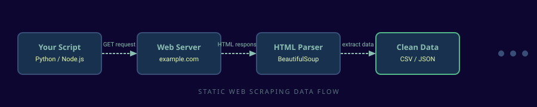

John D's Web Gatherer
Your beginner-friendly guide to static web scraping — tools, code examples, and responsible practices.
Explore the ToolsWhat is Web Scraping?
Web scraping is the automated process of extracting data from websites. Instead of copying and pasting information by hand, you write a small program that fetches a page, reads its HTML, and pulls out exactly what you need — prices, headlines, research records, and more.

How It Works
-
Send an HTTP Request
Your script sends a GET request to the target URL, exactly like your browser does when you visit a site.
-
Receive the HTML
The server responds with raw HTML markup — the same document your browser would normally render visually.
-
Parse the Document
A parser like BeautifulSoup converts the raw HTML into a tree structure you can query with tag names or CSS selectors.
-
Extract & Store the Data
Pull out the fields you need — text, links, attributes — and write them to a CSV or JSON file for later analysis.
Start Learning
Tools & Libraries
Explore the most popular scraping libraries for Python, Node.js, and the command line — filterable by category.
Browse ToolsEthical Guidelines
Learn about robots.txt, rate limiting, Terms of Service, and how to scrape responsibly.
Ask a Question
Have a specific scraping question or want to suggest a new topic? Reach out through the contact form.
Get in TouchTrack Your Learning
Check off topics as you work through them. Your progress is saved in your browser and persists between visits.
Ethics & Best Practices
Just because you can scrape a site doesn't always mean you should. Following these guidelines keeps you legal, respectful, and out of trouble.
robots.txt
and Terms of Service before writing a single line of scraping code.
What is robots.txt and why does it matter?
robots.txt is a file at the root of most websites
(e.g. https://example.com/robots.txt) that tells automated bots which
paths they are allowed or disallowed from accessing. Respecting it is considered
standard netiquette, and ignoring it can violate the site's Terms of Service.
How fast should I send requests?
time.sleep(1) in Python), or use
Scrapy's DOWNLOAD_DELAY setting. Being polite protects the site and you.
Is web scraping legal?
Should I cache responses during development?
requests-cache (Python) save HTTP responses locally so
repeated runs during development don't hit the server again. This speeds up your
iteration loop and reduces unnecessary load on the target site.
What about User-Agent headers?
"MyResearchBot/1.0 (contact@example.com)"). Impersonating a
real browser to bypass protections is considered bad practice.